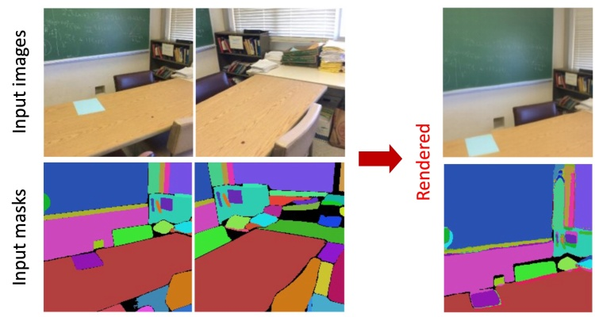
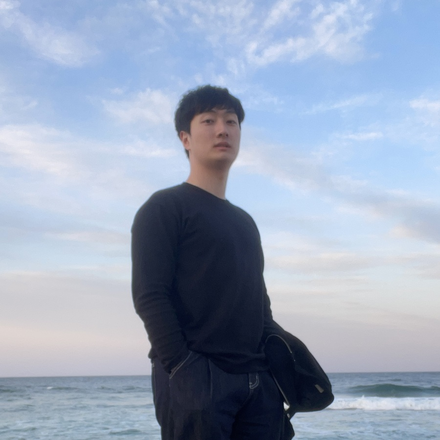
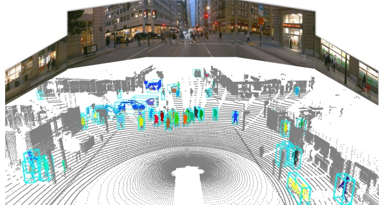
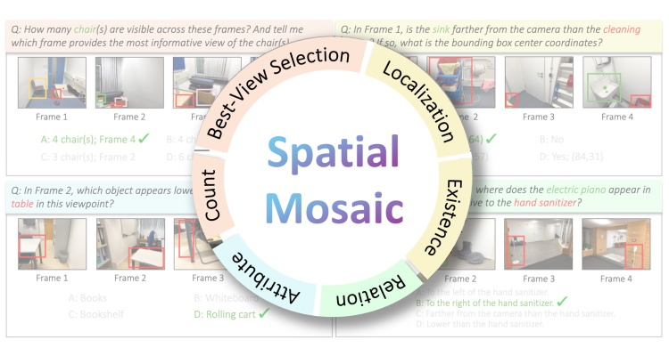
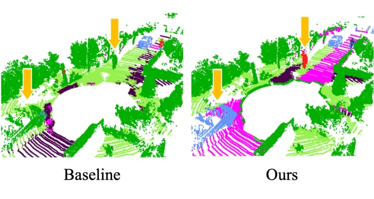
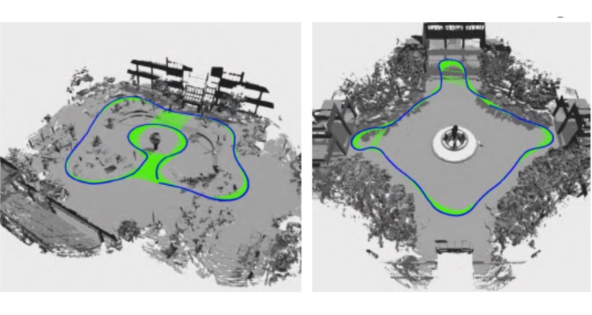
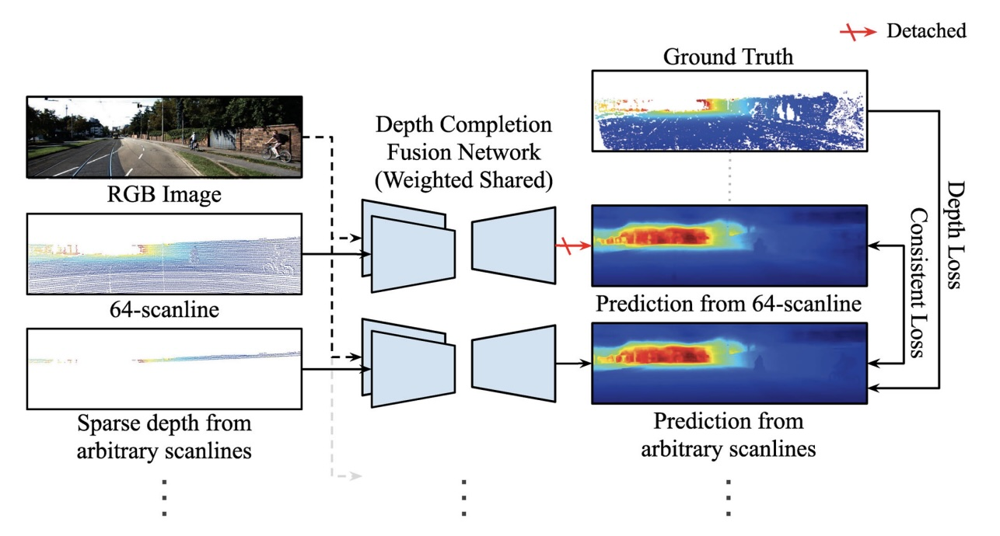
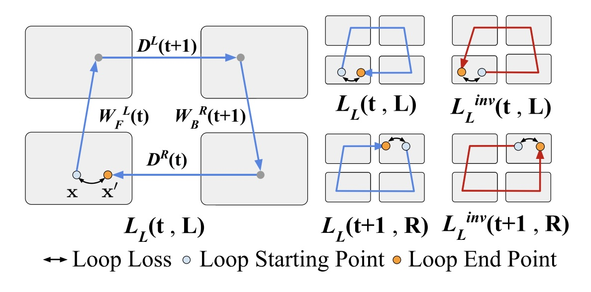

ECCV 2026
Extending a Large View Synthesis Model for Multi-view Panoptic Segmentation
Kwonyoung Ryu, In-Jae Lee, Jonghyun Jin, Hyunjee Lee, Jongmin Lee, Jaesik Park
Project (TBD)

I am a Ph.D. candidate in the Graduate School of Artificial Intelligence at POSTECH, advised by Prof. Sunghyun Cho and Prof. Jaesik Park. Currently, I am on a research assignment at the Visual & Geometric Intelligence Lab, Seoul National University, with Prof. Jaesik Park. Previously, I received my M.S. degree in Mechanical Engineering at Visual Intelligence Lab, KAIST, where I was advised by Prof. Kuk-Jin Yoon.
My research focuses on robust 3D scene understanding in challenging real-world settings, including 3D perception within multi-view image reconstruction and camera-LiDAR perception for autonomous driving.

Thesis: Scanline Resolution-Invariant Depth Completion Using a Single Image and Sparse LiDAR Point Cloud
Advisor: Kuk-Jin Yoon
Kwonyoung Ryu, In-Jae Lee, Jonghyun Jin, Hyunjee Lee, Jongmin Lee, Jaesik Park
Project (TBD)

In-Jae Lee, Mungyeom Kim, Kwonyoung Ryu, Pierre Musacchio, Jaesik Park
Spotlight

Kanghee Lee, In-Jae Lee, Minseok Kwak, Jungi Hong, Kwonyoung Ryu, Jaesik Park

Kwonyoung Ryu*, Soonmin Hwang*, Jaesik Park

Wei Dong*, Kwonyoung Ryu*, Michael Kaess, Jaesik Park

Kwonyoung Ryu, Kang-il Lee, Jegyeong Cho, Kuk-Jin Yoon

Taewoo Kim, Kwonyoung Ryu, Kyeongseob Song, Kuk-Jin Yoon
